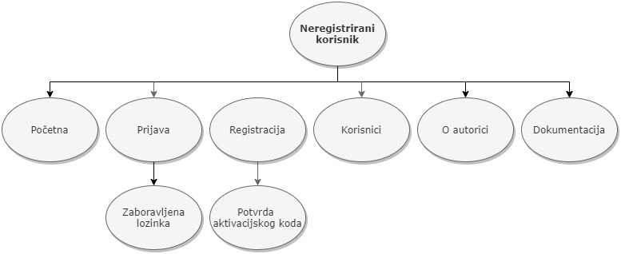

Projekt je izrađen da služi za kreiranje, prijavu i održavanje izložbi za vlakove prilikom čega se može izabrati pobjednik svake izložbe. Postoje 4 uloge, a to su:
Administrator
Moderator
Registrirani korisnik
Neregistrirani korisnik
Opis završenosti projekta
Procjena postotka realizacije projekta: 45%Procjena vremena za realizaciju projetka: 55h
Popis uočenih problema u radu
Nisu uočeni problemi u radu za dijelove koji su realizirani.
Era model
ERA model
Popis skripti
Što se tiče dokumentacija, projekt je raspoređen u više direktorija. Ispod će biti u tabličnom prikazu
navedene sve datoteke koje se nalaze u svakom direktoriju. U direktoriju multimedija se naleze slike korištene prilikom izrade projekta.
Dikrektorij css
Naziv datoteke
Opis datoteke
ssajfar_accesibility.css
Nalaze se postavke za crno-bijeli dizajn
ssajfar.css
Nalaze se postavke za dizajn nad svim stranicama i postavke reponzivnosti
Dikrektorij javascript
Naziv datoteke
Opis datoteke
brojVllakovaPoIzlozbi.js
Upisuje u tablicu naziv izložbe i broj vlakova po izložbi koja je aktivna
izlozbeModerator.js
Dodaje novu izložbu u tablicu gdje moderator može otvoriti i zatvoriti glasovanje
konfiguracijaSustava.js
Iz forme u obliku objekta dohvaća podatke te ispis podataka o konfiguraciji sustava (virtualno vrijeme, trajanje sesije...)
moderatori.js
Dohvaća korisnike i postavlja mdoeratora za određenu tematiku
mojePrijave.js
Rad s više prijava, mogućnost brisanja prijave u formi ili iz tablice i aužuriranje tablice
popisPrijavljenihKorisnika.js
Dodaje u tablicu popis prijavljenih korisnika
potvrdiPrijave.js
Klik na gumb za promjenu statusa prihvati/odbij prijavu na izložbu
registracija.js
Napravljene provjere s korisničke strane prilikom unosa polja za registraciju
ssajfar.js
Dodan event handler za gumb accessibility za crno-bijli dizajn
sveIzlozbe.js
Dohvaća sve prijave i u tablicu upisuje sve izložbe i dodaje gumb detaljnije
sviVlakovi.js
Dohvaća sve vlakove i u tablicu upisuje sve vlakove koji su sudjelovali na toj izložbi + gumb za glasanje
upravljanjeKorisnicima.js
Za blokiranje i otključavanje korisnika
Dikrektorij privatno
Naziv datoteke
Opis datoteke
.htaccess
Nalaze se postavke za zaključavanje direktorija
.htpasswd
Nalazi se korisničko ime i kriptirana lozinka za otključavanje direktorija
korisnici.php
Ispis korisnika sa njihovim ulogama
Dikrektorij skripte
Naziv datoteke
Opis datoteke
dodajIzlozbu.php
Dodavanje izložbe s tom tematikom
dodajModeratoraTematici.php
Dohvaćanje podataka iz baze i pridruživanje moderatora određenoj tematici
dohvacanjeEmaila.php
Dohvaćanje svih emaila iz baze koji se trenutno koriste
dohvacanjeKorisnika.php
Dohvaćanje svih korisničkih imena
dohvatiBrojVlakovaPoIzlozbi.php
Dohvaćanje broja vlakova po izložbi i id izložba koje su aktivne
dohvatiIzlozbeId.php
Dohvaćanje id i naziv svih izložba
dohvatiMojeIzlozbe.php
Dohvaćanje izlozba za koje je taj moderator zadužen
dohvatiMojePrijave.php
Dohvaćanje svih izložba tog korisnika
dohvatiPopisPrijavljenihKorisnika.php
Dohvaćanje iz baze popisa prijavljenih korisnika
dohvatiPrijavePremaIzlozbi.php
Dohvaćanje prijava prema izložbi
dohvatiSveIzlozbe.php
Dohvaćanje svih izložba
dohvatiSveVlakove.php
Dohvaćanje svih vlakova koji su sudjelovali na toj izložbi
dohvatiTematikaIzlozbeModeratori.php
Dohvaćanje svih tematika izložbe
glasovanje.php
Unost u bazu korisnika koji su glasali za kojeg vlaka na kojoj izložbi
korisnici.php
Dohvaćanje svih korisnika
korisniciPremaUlozi.php
Dohvaćanje svih korisnika prema ulozi
mozeGlasati.php
Dohvaćanje iz baze je li korisnik već glasao za tu izložbu
novaKonfiguracija.php
Promjena konfiguracije i unos u bazu promjene
obrisiPrijavu.php
Brisanje prijava koje su već napravljene iz baze
postaviModeratora.php
Postavljanje korisnika da mu uloga bude moderator
prijavaNaIzlozbuSkripta.php
Dodavanje vlaka na izložbu i provjere s klijente strane
promjeniStatusPrijave.php
Promjena statusa prijave
promjeniStatusKorisnika.php
Promjena korisnika jel aktivan ili neaktivan
registracijaSkripta.php
Provjera polja u registracijskoj formi s klijentske strane
Ostale datoteke
Naziv datoteke
Opis datoteke
aktivacija.php
Provjera je li potvrđen aktivacijski kod nakon registracije
baza.class.php
Klasa za rad s bazom podataka
autor.html
Stranica o autoru
index.php
Početna stranica, naslovnica
izlozbe.php
Stranica s popisom izložbi
izlozbeModerator.php
Stranica s popisom izložbi koje može moderator vidjeti u upravljati
konfiguracijaSustava.php
Stranica za postavljanje konfiguracije sustava i virtualno vrijeme
korisnikClass.php
U sesiju se sprema taj objekt
moderatori.php
Vidi se popis registriranih korisnika/ moderatora i mogućnost dodavanja novog moderatora
mojePrijave.php
Popis mojih prijava na izložbu i dodavanje nove prijave za izložbu
navigacija.php
Prikaz stranica koje svaki korisnik vidi prema ulogi, određivanje uloge svakog korisnika
odjava.php
Odjava sa stranice
okvir.php
Aplikacijski okvir
popisPrijavljenihKorisnika.php
Stranica s popisom prijavljenih korisnika
potvrdiPrijave.php
Stranica s potvrdom prijave za izložbu
pregledVlakova.php
Pregled svih vlakova po izložbi
prijava.php
Prijava u sustav
provjeraUloge.php
Provjera uloge korisnika
registracija.php
Stranica za registraciju
sesija.class.php
Klasa za upravljanje sesijama
upravljanjeKorisnicima.php
Početna stranica, naslovnica
virstualnoVrijeme.php
Postavljanje virtualnog vremena
Navigacijski dijagrami
Navigacijski dijagram za administratora Navigacijski dijagram za moderatora Navigacijski dijagram za registitranog korisnika Navigacijski dijagram za neregistriranog korisnika
Korišteni alati
Visual Studio Code
Notepad++
MySQL Workbench
DBeaver
phpMyAdmin
FileZilla
Putty
Korištene vanjske datoteke
baza.class.php - skripta za rad s bazom podataka, preuzeta sa stranica kolegija
korisnikClass.php - skripa koja sadrži klasu korisnik koja se pamti u sesiji, preuzeta sa stranica kolegija
sesija.class.php - skripta za rad sa sesijom, preuzeta sa stranica kolegija